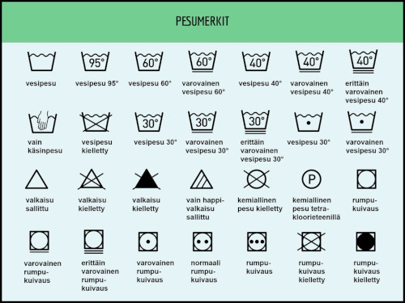
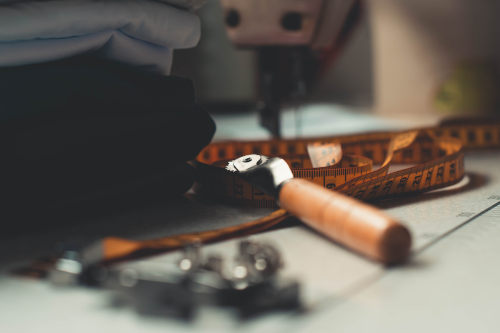

Vaatteet voi pitää hyväkuntoisena pidentämällä pesuvälejä, käyttämällä vaateharjaa ja tuulettamalla. Jos vaate ei ole tahrainen tai muuten likainen, vaatteen
voi pesun sijaan tuulettaa. Vaatetta ei tarvitse aina myöskään pestä kokonaan, vaan yksittäiset tahrat voi poistaa käsinpesussa. Liika peseminen kuluttaa sekä
vaatetta, että ympäristöä.
Vaatteiden käyttöikää voi pidentää käyttämällä nukkaharjaa, joka poistaa helposti vaatteen pintaan kertyneen nukan.
Oikeaoppinen pesu lisää vaatteen käyttöikää. Tutustu siis huolellisesti vaatteen pesulappuun ja noudata ohjeita. Liian korkea lämpötila voi pilata vaatteen, joten
pesulämpötilan kanssa kannattaa olla tarkkana. Vaatteen voi aina kuitenkin pestä viileämmässä kuin pesulapussa mainittu lämpötila. Muista pestä aina täysiä koneellisia
säästääksesi niin vetää, kuin sähköäkin. Kone on yleensä täynnä kun yläosaan jää noin kädenlevyinen tila. Kiinnitä huomiota myös pesuaineeseen, sillä liian voimakas
pesuaine kuluttaa vaatetta ja voi myös ärsyttää ihoa.

Tietoa pesumerkkien merkityksestä
Älä pese vaatteita liian usein
Vaatteiden liika peseminen kuormittaa niin vaatetta, kuin ympäristöäkin!
Käytä tarvittaessa nukkaharjaa
Pese vaatteet aina pesuohjeiden mukaan
Voit kuitenkin aina pestä vaatteet pienemmässä lämpötilassa kuin pesulapussa mainitussa
Pese käysiä koneellisia
Valitse mahdollisuuksien mukaan ympäristöystävällinen, ei liian voimakas pesuaine
Rikkimenneiden vaatteiden korjaaminen

Jos vaate menee rikki, sitä ei kannata heittää suoraa kierrätykseen! Vaatte kannattaa korjata, sillä esimerkiksi saumat ompelee helposti takaisin kasaan ja
nappikin on helppo ommella kiinni. Jos vaatetta ei tahdo korjata itse, sen voi viedä myös ompelimoon paikattavaksi.
Vinkki: Napit kannattaa ommella paremmin kiinni jo heti vaatteen ostamisen jälkeen! Näin napit eivät irtoa niin helposti käytössä.
Vinkkejä vaatteiden korjausompeluun:
Valitse vaatteen materiaalia vastaava lanka, eli villalle villaa, puuvillalle puuvillaa.
Älä ompele reunalta toiselle, vaan kulje neulan avulla nurjalta päällipuolelle. Näin reiästä tulee huomaamttomampi.
Ratkenneen sauman korjaus kannattaa tehdä ompelukoneella. Jos sauma on ratkennut pitkältä matkalta, saumaan kannattaa silittää
tukikangasta takaamaan uuden ompeleen keston.
Materiaalikohtainen huoltaminen
Villa: Villavaatteiden pesua olisi hyvä välttää ja pestä vaate ainoastaan sen ollessa likainen. Tuuletus on villalle paras vaihtoehto.
Nahka: Nahkavaatteita ja kenkiä tulee huoltaa hieman eri tavalla kuin muista materiaaleista valmistettuja vaatteita. Nahka tulee ensin
puhdistaa, sitten hoitaa ja suojata. Nahkavaatteiden kannattaisi antaa aina välillä "levätä" jotta ne pysyisivät paremmassa kunnossa pidempään.
Pellava: Pellavasta valmistetut vaatteet on hyvä pestä erikseen muusta pyykistä, eikä täysinä koneellisina. Pellava vaatii pesussa
enemmän vettä kuin muut materiaalit, ja siitä irtoaa pesun aikana pientä kuitua, joka voi tarttua helposti toisiin vaatteisiin. Rumpukuivaaminen on pellavan
kohdalla usein kieleltty, sillä se heikentää luonnonkuitua. Pellava kannattaa kuivattaa narulla.
Silkki: Silkkiset vaatteet kannattaa tuulettaa käytön jälkeen ja pestä säännöllisesti silkille tarkoitetulla pesuaineella. Silkki on
hyvin herkkä materiaali kemikaaleille, joten kannattaaa olla varovainen esimerkiksi meikkien, hiuslakan ja deodorantin kanssa.
Alusvaatteet: Alusvaatteet kannattaa pestä usein. Pesu on hyvä suorittaa joko käsin, tai pyykinpesukoneessa pesupusseissa.